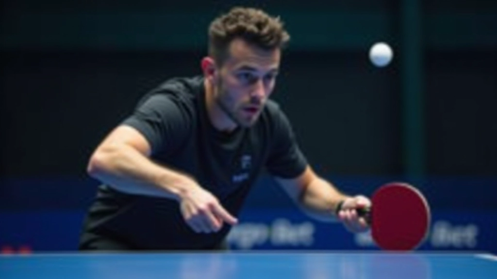
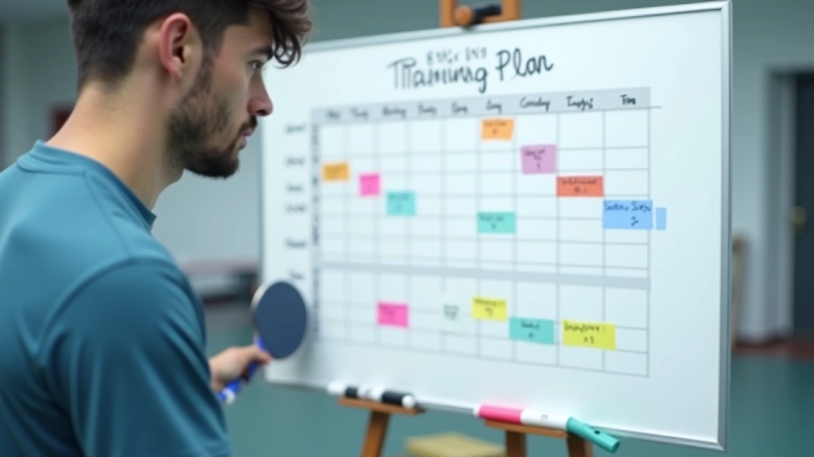
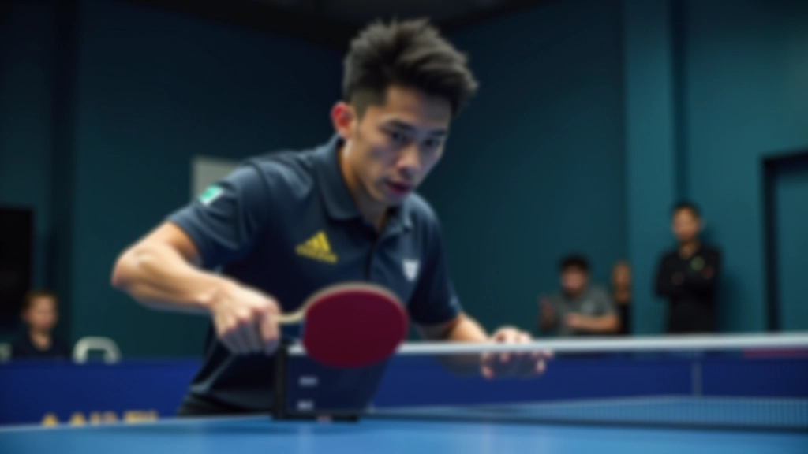
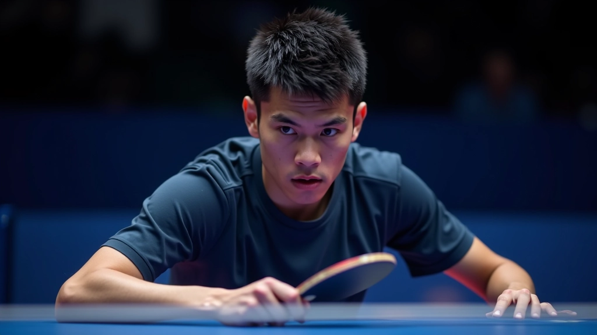

تمارين تقوية الذراع والكتف للوب الخلفي
تمارين عملية تساعدك على بناء القوة اللازمة لتنفيذ اللوب بقوة واتساق. نركز على العضلات الأساسية.
بعد إتقان الأساسيات، انتقل للمستويات الأعلى. نشرح كيفية تطبيق اللوب في المباريات الحقيقية ضد لاعبين بمستويات مختلفة.


المرحلة المتقدمة تختلف تماماً عن التدريب الأساسي. هنا، لن تواجه فقط لاعبين يريدون تعلم الحركة — ستواجه لاعبين متخصصين يدافعون بقوة ضد اللوب.
في المباريات الحقيقية، الخصم لا ينتظرك. يحاول قراءة حركاتك، ويتوقع متى ستستخدم اللوب، ويضع الكرة في أماكن صعبة. هذا يعني أن تقنيتك يجب أن تكون مرنة وقوية في نفس الوقت.
نركز على ثلاث مهارات أساسية: السرعة في القراءة، الاتساق تحت الضغط، والتكيف مع أنماط اللعب المختلفة. كل واحدة منها تتطلب تدريباً منظماً.

برنامج التدريب المتقدم يقسم إلى ثلاث مراحل، كل واحدة تستمر حوالي 4-6 أسابيع. المرحلة الأولى تركز على تحسين السرعة والدقة، والمرحلة الثانية على اللعب ضد الدفاع القوي، والمرحلة الثالثة على المباريات التنافسية الفعلية.
تحسين السرعة والقوة والاتساق. جلستان أسبوعياً، 90 دقيقة لكل جلسة.
لعب ضد أنماط دفاع متنوعة. ثلاث جلسات أسبوعياً مع تركيز على المباريات التجريبية.
مباريات رسمية وتقييم الأداء. جلسات تقييم أسبوعية لتحديد نقاط القوة والضعف.


عندما يدافع الخصم بقوة، لا يمكنك الاعتماد على نفس اللوب البسيط. تحتاج إلى تنويع — لوب بقوة أكثر، لوب أخف للكرات السريعة، لوب بزوايا مختلفة.
نعلمك كيفية قراءة الكرة الواردة بسرعة وتعديل قوتك بناءً على السرعة والدوران. هذا يتطلب ممارسة مكثفة — حوالي 200-300 كرة يومياً على الأقل في البداية.
اللوب الهجومي: تستخدمه عندما تكون الكرة عالية. قوة قصوى وسرعة عالية.
اللوب الدفاعي: للكرات السريعة والقريبة. تركيز على التحكم بدلاً من القوة.
اللوب الاستراتيجي: تغيير الزاوية والعمق لإرباك الخصم.
في المستويات المتقدمة، الفرق بين اللاعبين ليس تقنياً فقط — إنه ذهني أيضاً. اللاعب الذي يبقى هادئاً تحت الضغط، والذي يقرأ خصمه بشكل صحيح، هو من يفوز.
نعلمك كيفية البقاء متركزاً على مدى المباراة. ننصح باستخدام تقنيات التنفس، تحديد أهداف صغيرة لكل مباراة، وعدم الاستسلام عندما تكون الأمور صعبة. في حوالي 70% من المباريات التي نراها، اللاعب الذي يخسر يستسلم ذهنياً قبل أن يخسر فعلياً.

إليك مثال على جدول أسبوعي نموذجي للاعب متقدم يستهدف المنافسة:
جلسة بناء قوة (90 دقيقة): تمارين تقوية + 100 لوب على كل جانب
جلسة لعب تنافسي (90 دقيقة): مباريات تجريبية ضد لاعبين متنوعين
جلسة تطبيق تقنيات (90 دقيقة): تركيز على تقنيات جديدة ضد دفاع قوي
مباراة رسمية أو جلسة تقييم (120 دقيقة)
الطريق إلى مستويات عالية يتطلب التزاماً حقيقياً. ليس فقط جسدياً، بل عقلياً أيضاً. ستواجه لاعبين أفضل منك، وستخسر مباريات ستشعر أنك كان يجب أن تفوز بها. هذا جزء من العملية.
المهم أن تبقى متركزاً على التحسن المستمر. كل مباراة تعلمك شيئاً جديداً. كل هزيمة توضح لك مجالات تحتاج إلى عمل. نحن هنا لمساعدتك على تحديد تلك المجالات وتطويرها.
إذا كنت جاداً بشأن الوصول لمستويات أعلى، ستحتاج إلى برنامج منظم، مدرب متخصص، وزملاء تدريب جيدين. الثلاثة معاً سيأخذونك بعيداً.
هذا المقال يقدم معلومات تعليمية عن برامج التدريب المتقدمة في تنس الطاولة. النصائح والتقنيات الموصوفة هنا مبنية على ممارسات شائعة في المستويات المتقدمة، لكن كل لاعب مختلف. نوصي بشدة بالعمل مع مدرب متخصص يمكنه تقييم وضعك الفردي وتعديل البرنامج وفقاً لاحتياجاتك. قد تختلف النتائج بناءً على مستوى البداية، الالتزام بالتدريب، والقدرات الجسدية الفردية.
واصل تعلمك مع هذه الموارد الإضافية
تمارين عملية تساعدك على بناء القوة اللازمة لتنفيذ اللوب بقوة واتساق. نركز على العضلات الأساسية.

أغلب المبتدئين يرتكبون أخطاء في وضعية الجسد أثناء اللوب. نشرح الأخطاء الثلاثة الأكثر شيوعاً.

نوع المضرب يؤثر كثيراً على أداء اللوب. نساعدك على فهم الفروقات بين الخيارات المختلفة.